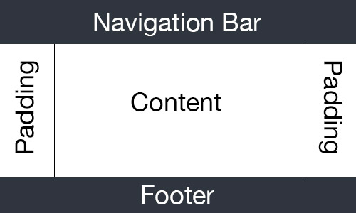
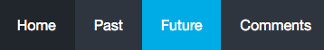

Comments
Technical
Technically speaking my website is composed of four HTML pages, and a single CSS file. This means that changes that occur to the CSS file will apply to all pages, which keeps them all in line in terms of styling.
The Navigation bar contains a heading 1 tag "Jack Pascoe" and the navigation bar (That uses a unorder list as its backbone).
The content section of the pages primarily contains heading 2 tags, pre and p tags for the main text. Most pages also include images that describe what was talked about.
The footer div contains simply a p tag for displaying student number, name and copyright.
The site currently complies with HTML 4.01 and CSS 2.1 with a few CSS 3 specific items.
The selecters and ID's I have implemented are the following:
| Selector / ID | Description |
|---|---|
| .heading | Used to define the colour, font and alignment. |
| .header | Used to set the background colour, padding, position and size of the navigation bar. |
| .wrapper | A div used to ensure the website takes up the entire page and leaves no gaps. |
| .active | Sets the attributes of the nav button of the current page, changing it's colour. |
| .content | The div that holds the main content of the page. The CSS defines the padding on each side to ensure all the content is visible irrelevant to screen size. |
| #home | ID used to set the variables of the image of me on the home page. |
| #name | Controls the style of the span used to bold my name on the home page. |
| .footer | Class that sets the background colour, position, size, padding and overflow of the footer. |
| .selectTable | Sets the size, element spacing, font and font size of the table. |
| #topName | ID used to the large Jack Pascoe to the left of my navigation bar, sets the colour, position, font and padding. |
| .selectTable | Sets the size, element spacing, font and font size of the table. |
| #sanFran & #chem | ID's that set the size, margin and location of the images |
| #chemFriend | Sets the attributes for the span that is used as a caption of the chemFriend image. |
| .techPics | Sets the attributes for displaying the technical pictures on the comments page. |
Aesthetics
In terms of aesthetics I have chosen a simple blue colour palette (Navy, Dark blue and an Aqua). Apart from a sleek look, the colours are easily distinguishable making the website easy to read and navigate.
The hover and active attributes of the navigation bar are intended to clearly illustrate where the user currently is and where they are selecting to go next.
The fonts used are intentionally minimalistic as to not take away from the content and are easy on the eye. The fonts used are Lato for headings and Helvetica Neue for all other text.
Overall, the aesthetics of my website were specifically selected to create a sleek and minimalistic feel with spaced out easy to read content.
Accessibility
The colour palette selected is intentionally easily distinguishable from one another using colours that do not conflict in the colour blind spectrum.
All images have alt attributes attached to them that describe what the image depicts, so that screen readers can be used to help the vision impaired get a picture of the entire site.
The sites variables are percentages, thus the website reacts and scales as the browser is resized to allow a larger number of users to view it.